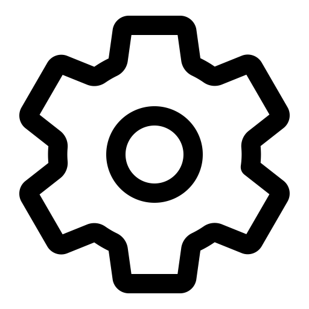

À propos
À propos
Je suis développeur Multimédia, passionné par le web et les technologies numériques. Mon expertise me permet de mener à bien des projets créatifs et techniques.
Expériences Professionnelles
- Stagiaire Monteur Vidéo – Go Media (Juil. 2024 – Oct. 2024)
- Développeur Web Stagiaire – Jabba Groupe (Nov. 2021 – Mai 2022)
- Surveillant Permanent – UN-CHK (2025 - Présent)
- Commission d’Accueil – ENO Guédiawaye (2020 – 2023)
 Formations
Formations
- Master Multimédia Communication Digitale – UN-CHK (2022 – 2023)
- Licence Dev Web/Mobile/Gaming – UN-CHK (2017 – 2021)
- Certificat Informatique & Internet – FORCE-N (Mars 2023)
- Formation Montage Vidéo – Kino Téranga (Oct. 2020)
- Baccalauréat L2 – Antoine de Padoue (2016 – 2017)
 Compétences
- Développement Web et Mobile
- Community manager
- Montage vidéo et production multimédia
- Suite Microsoft Office / Google Suite
- Créativité et innovation interactive
- Gestion de projet
 Langues
Langues
- Français – courant
- Wolof – courant
- Anglais – écrit
 Centres d’intérêt
Centres d’intérêt
- Codage
- Sport
- Bénévolat